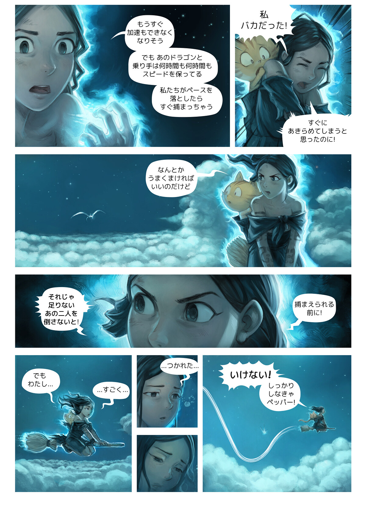
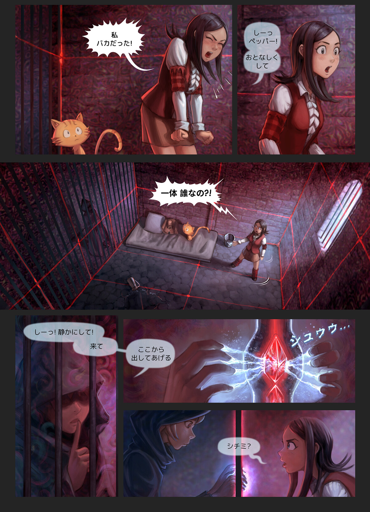

Pepper&Carrot episodes 35 and 36 by David Revoy, Japanese translation by the Pepper&Carrot contributors. Licensed CC BY 4.0.
These are pages of Pepper&Carrot in Japanese. The translator has already started: watch the speech bubble in the bottom-right corner. The first page takes longest while the model loads.
Use the ⇄ button to compare with the original, or click the round mark on a page. The sliders button changes the languages.


Pepper&Carrot episodes 35 and 36 by David Revoy, Japanese translation by the Pepper&Carrot contributors. Licensed CC BY 4.0.